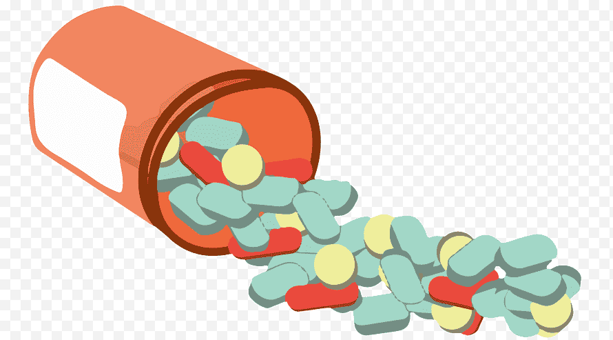

En el Centro de Atención Ciudadana contra las Adicciones un grupo de especialistas te escucha para ofrecerte:
*Prevención y atención del consumo de sustancias adictivas y orientación a sus familiares.
*Tratamiento breve para dejar de fumar.
*Orientación en el manejo de conductas adictivas (ludopatía, nuevas tecnologías de la información).
*Intervención en crisis y emergencias.
*Información de centros de tratamiento especializados en adicciones
reconocidos por la Comisión Nacional contra las Adicciones.
*Información básica sobre sustancias adictivas.
*Seguimiento a las necesidades de la ciudadanía hasta su conclusión.

UNAM DA ATENCIÓN A JÓVENES CON PROBLEMAS DE ADICCIONES
En México, una de las principales adicciones es el consumo de alcohol; a nivel nacional el 71.3 por ciento de la población consume este producto; de ellos, una tercera parte lo hace en grandes cantidades. Mientras que entre los jóvenes de 12 a 17 años; el 17.3% de los hombres lo ingiere y el 11.7% corresponde a mujeres, según datos de la última Encuesta Nacional de Adicciones.
La doctora Lydia Barragán Torres, directora del Centro de Prevención y Atención de Adicciones, dependiente de la Facultad de Psicología de la UNAM, explica que el consumo de alcohol, tabaco, marihuana y otro tipo de drogas, se están consumiendo a edades más tempranas y en mayores cantidades. Por ello, dijo es importante que los padres de los jóvenes estén pendientes para detectar oportunamente los síntomas y recurrir a ayuda profesional.
https://www.fundacionunam.org.mx/donde-paso/unam-da-atencion-a-jovenes-con-problemas-de-adicciones/La CENADIC
Tiene como objetivo promover la coordinación entre los sectores público, social y privado, para de esta forma lograr una red de servicios integrales de prevención, tratamiento, rehabilitación y reinserción de las adicciones, buscando conseguir una cobertura nacional de calidad siempre bajo las mejores prácticas.
"https://dinoalasdrogas.com/rehabilitacion-adicciones/instituciones-contra-las-drogas/"/